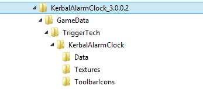
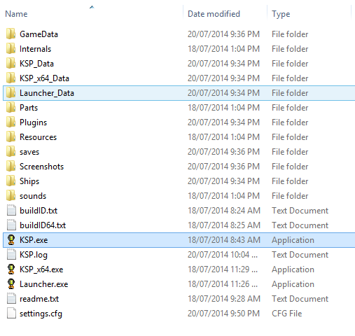
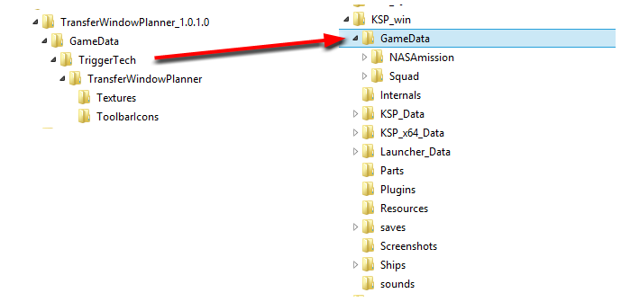
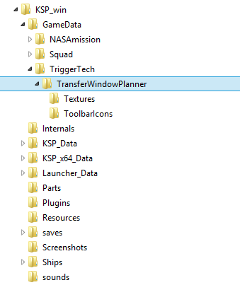

Take the downloaded file and extract it to a temporary location. You will end up with a folder that looks like the below:
The first step to installing an addon is to locate the KSP folder in your computer. This is where KSP keeps all of its files, including your game saves and screenshots. The KSP folder is located where you unzipped it when you first downloaded the game. The folder looks like the below:
Simply copy the files from the GameData source into the GameData folder in the KSP Game folder. As shown below:
Your Game folder will now look like this. And you should be able to start KSP and use the Plugin
